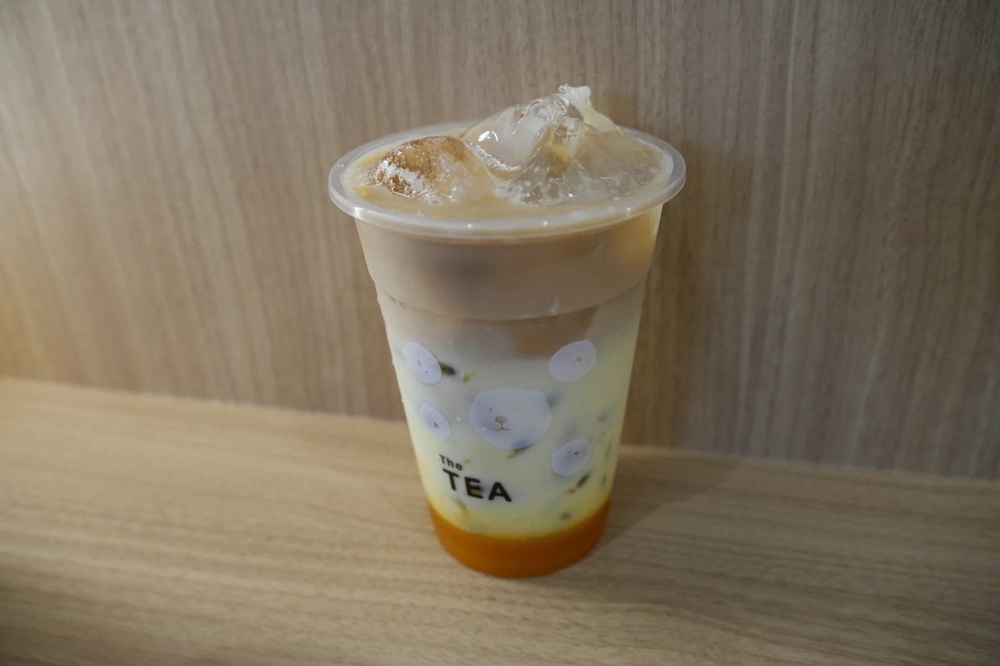

お茶の香りを紹介するテスト文です。
YOUR LOCAL TEA STAND, HOKKAIDO.
北海道の、
いつもの一杯。
ふらっと寄れて、ほっとできる。
北海道のみなさんのそばにある、
ローカルティースタンドです。
いつもの街に、お茶の時間。SCROLL

A LITTLE TEA, A LITTLE HAPPINESS.あなたの街のお茶やさん。HELLO, HOKKAIDO!
01 / ABOUT USThe TEAについて
はじめましても、いつもどうも。
おいしいお茶を、
もっと近くに。
特別な日だけでなく、いつもの日にも。
学校や仕事の帰り道、誰かとの待ち合わせ。
北海道で暮らすみなさんの、
気軽に立ち寄れる場所でありたい。
一杯のお茶をきっかけに、
この街との距離が、ちょっと近くなる。
そんなお店を、ここ北海道で。
03 / HELLO, NEIGHBORS地域とつながる
お茶の向こうに、
街のつながり。
北海道のみなさんと、もっと近くに。
地域のイベントや、お店の日常をお届けする場所です。
掲載サンプル
街のイベント・コラボのお話
ここに地域での活動を紹介します。
現在、掲載内容を準備しています。
04 / FIND US店舗・アクセス
The TEA 店舗名を掲載予定
- 住所
- 正式な住所を掲載予定
- 営業時間
- 営業時間を掲載予定
- 定休日
- 定休日を掲載予定
- アクセス
- 最寄り駅・道順を掲載予定
この枠はテスト用です。来店時はInstagramをご確認ください。
05 / NEWS & JOURNALお知らせ
The TEAだより。
最新情報はInstagramへ （新しいタブで開きます）お店のこと営業のお知らせが入ります SAMPLE
営業時間の変更や休業日などを掲載するためのテスト文です。実際の営業案内ではありません。
メニュー新しい一杯のお話が入ります SAMPLE
新商品の紹介文を掲載するサンプルです。商品名・発売日・価格を確認した後に差し替えてください。
街のこと地域のお知らせが入ります SAMPLE
地域のイベントやコラボレーションを掲載するサンプルです。参加予定や実績を示すものではありません。
06 / GOOD TO KNOWよくあるご質問
来る前の、
ちょっとしたこと。
メニューや価格はどこで見られますか？
このサイトのメニューはサンプルです。販売中の商品・価格はInstagramでご確認ください。
アレルギー情報を知りたいです。
回答欄のテスト文です。原材料・アレルギー表示と、店舗での案内方法を確認して掲載します。ご注文前に店舗へご確認ください。
テイクアウトや支払い方法は？
回答欄のテスト文です。利用できるサービスや決済手段を確認してから掲載します。
LET'S KEEP IN TOUCH.
お茶の時間の、その先も。
お店の日常や、新しい一杯のお話。
Instagramでも、気軽につながってください。